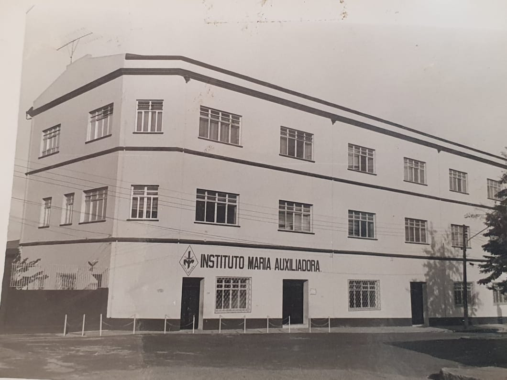
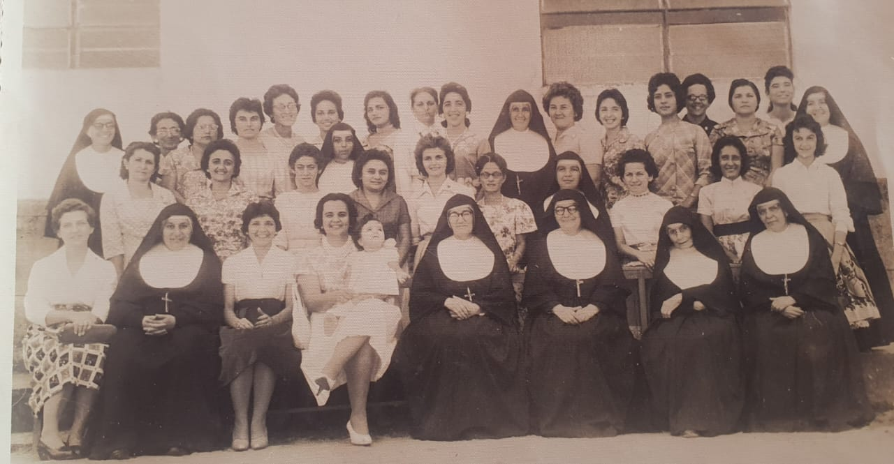
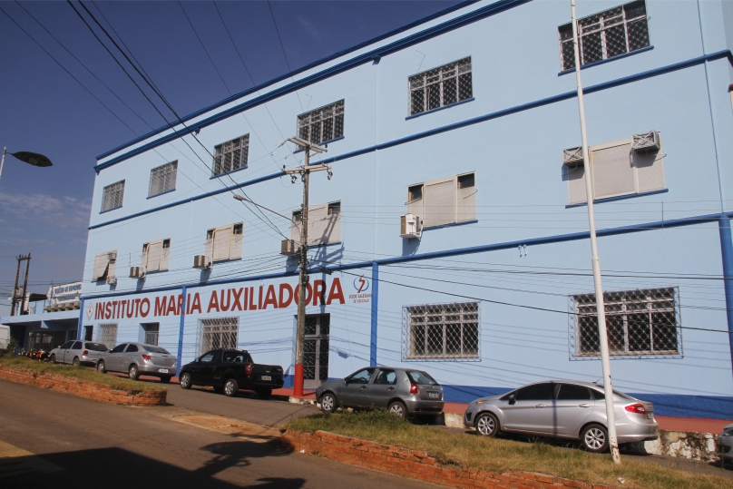

Nossa Escola
Numa longa viagem marítima que durou 36 dias, as primeiras e intrépidas missionárias saíram de São Paulo com destino à Amazônia, novo campo de missão onde as Filhas de Maria Auxiliadora são enviadas, seguindo o exemplo de Dom Bosco e de Madre Mazzarello, para doar a vida aos povos que habitam nesta longínqua e promissora região. Mulheres simples, corajosas e cheias de Deus, dispostas a enfrentar qualquer incômodo, entregando-se de corpo e alma, a serviço da evangelização.
Fazem parte desta expedição missionária as Irmãs que, movidas pelo ideal de avançar para águas mais profundas, são destinadas a implantar o carisma salesiano em terras amazônicas, formando comunidades em três novas fundações: Porto Velho, Manaus e o Distrito de Iauareté, no município de São Gabriel da Cachoeira, região do Alto Rio Negro. As navegantes desembarcam em Manaus no dia 26 de fevereiro de 1930. Uma nova etapa desta aventura missionária continua para aquelas que devem seguir outro destino, singrando o Rio Madeira, a bordo do vapor Índio do Brasil.
Finalmente, no dia 19 de março de 1930, colocam os pés em solo rondoniense, Porto Velho, trazendo, além da bagagem, os ingredientes da fé, da esperança e do amor incondicional como alicerce para edificar o novo edifício que em breve se erguerá como lugar de acolhida e espaço de formação humana e cristã para a juventude destinatária desta nobre missão. Compõem a nascente comunidade: Ir. Carlota Rena, Ir. Elizabetta Negri e a jovem Sebastiana Assis. No mesmo ano chegou para somar com a equipe a Ir. Petrina Pinheiro. Pioneiras desta grande obra abraçam a missão com bravura e todo entusiasmo que vem do coração, anunciando a Boa Nova do Reino e formando “Bons cristãos e honestos cidadãos”.
Nos primeiros nove anos a comunidade assume a administração do Hospital e as atividades pedagógicas do Colégio. Ao mesmo tempo, abrem os cursos de Corte e Costura, Bordado, Pintura, Arte Culinária e Confecção de Flores, o que lhes acarreta uma imensa sobrecarga de trabalho. Em 17 de agosto de 1939, por ocasião de sua visita à comunidade, a Inspetora Madre Constanza Storti, autorizou o redimensionamento da administração, ficando o Hospital São José sob a direção de Ir. Capelli e o Colégio continua tendo à frente como diretora Ir. Elisa Ferreira.
Desde a sua origem, o Instituto Maria Auxiliadora formou inúmeras educadoras para o campo do magistério, contribuindo desta forma com a educação de crianças e jovens da capital rondoniense. O primeiro grupo de normalistas realizou sua formatura no dia 1º de dezembro de 1940, e o Instituto Maria Auxiliadora tem a honra de entregar à sociedade sete jovens preparadas para exercer o magistério, portando o título de Professoras.
Caminhando com os tempos, no decorrer dos anos, a escola foi crescendo e ampliando suas estruturas físicas e pedagógicas para atender as demandas da sociedade envolvente, tornando-se uma obra de proeminente valor no âmbito educacional. A implantação de novos projetos foram acontecendo gradativamente, ao ritmo das mudanças do contexto social, com abertura para as novas realidades das famílias e do mundo em contínua transformação, buscando sempre ser resposta de vida e de salvação aos profundos anseios da juventude.
Chegado o ano de 2020, e o Instituto Maria Auxiliadora - IMA, em Porto Velho (RO), celebrou seus 90 anos. Muitos eventos educativos, religiosos e sociais foram pensados e programados pela Comunidade Educativa para celebrar esta data em tom de solenidade, reconhecendo os incontáveis benefícios que a Instituição, ao longo da sua trajetória, tem proporcionado às famílias e sociedade portovelhense, construindo uma base sólida de valores nas gerações que fizeram parte desta linda história. São muitas memórias, de ontem e de hoje, com incontáveis motivos para dizer um “obrigado (a)”, sincero, de coração.
No dia 14 de maio recorre a data histórica da fundação do IMA, que neste ano de 2021 completa 91 anos no solo desta terra abençoada. Toda comunidade educativa: Irmãs, funcionários, pais, estudantes, ex-alunas, amigos e colaboradores, todos que fizeram e fazem parte desta grandiosa família, que se sente privilegiada de ter como titular e patrona MARIA AUXILIADORA. Ela, a Virgem de Dom Bosco, Educadora e Mestra do Sistema Preventivo, acolhe em seus braços cada pessoa que chega a esta casa, qual mãe cheia de ternura, e com sua presença materna, confiante e educadora vai conduzindo seus filhos e filhas ao encontro de Jesus. E no seu peregrinar entre nós, continua sussurrando a cada instante: “Fazei tudo o que Ele vos disser”.
No decorrer destes 93 anos do Instituto Maria Auxiliadora, com muita alegria, mas também responsabilidade, podemos constatar a realização das palavras de Madre Mazzarello, proferidas em uma de suas conferências às primeiras Irmãs de Mornese – Itália, berço da nossa congregação; ela que sempre acreditou na expansão da Ação Educativo-Pastoral do Instituto, por ser COISA DE DEUS com muita convicção disse-lhes: “...agora nossa obra se alargará, terá sempre proporções mais vastas, trabalhar-se-á talvez mais em meio as meninas. Os locais, as escolas, as salas de trabalho serão mais adequadas, oferecendo a vocês a possibilidade de cumprir melhor a missão entre as(os) jovens; terão não só o necessário, mas também o útil...”